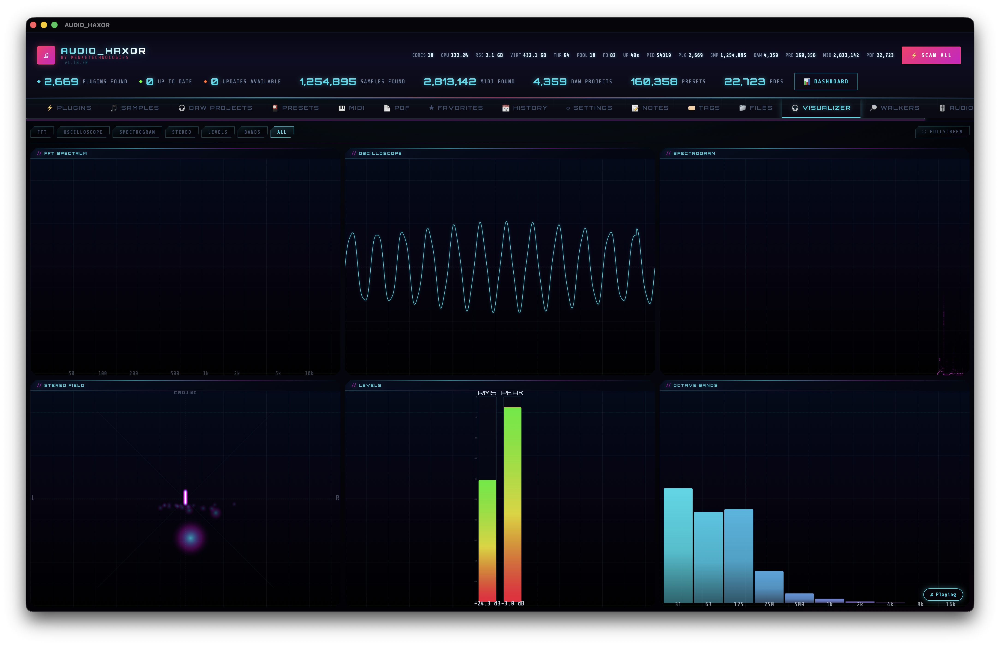

15.Real-time visualizer — F4
Six live tiles driven by either the audio-engine subprocess or a Web Audio AnalyserNode fallback. Drag to reorder, double-click to go fullscreen, pause the FFT to freeze a snapshot, and trust the idle backoff to stay invisible when you're not looking.

Open the tab
Press F4 or click Visualizer. The tab uses a grid layout with two display modes held in _vizMode (frontend/js/visualizer.js):
- Grid mode —
'all'. All six tiles visible at once at 20 FPS. - Single mode — one tile fills the full viewport at 30 FPS.
Double-click any tile to toggle single-mode / grid-mode. Drag tiles by their handle to reorder — order persists via the shared drag-reorder utility.
The six tiles
- FFT — frequency spectrum bars. Parameters:
fftSmoothing = 0.8(exponential moving average between frames),fftLogScale = true(log frequency axis). Pause the animation with the dedicated button (toggleFftAnimationPaused(), ~line 1393) to freeze a snapshot in_vizFftFrozenCopyfor close inspection. - Oscilloscope — real-time waveform trace. Two modes controlled by
oscilloscopeTriggeredSweep: free-run or triggered sweep (aligns the trace to a zero-crossing like a scope)._vizOscLastTriggercarries the previous trigger index across frames so the trace stays stable even when a buffer contains no new crossing. - Spectrogram — scrolling waterfall plot of the spectrum over time, driven by a ring buffer (
_vizSpectrogramData) with write index_vizSpectrogramIdx. Scroll speed isspectrogramSpeed = 1. - Stereo — per-channel L/R amplitude meters with peak hold.
- Levels — overall RMS + peak. Peak hold is a decay timer (
_vizPeakHold/_vizPeakTimer) controlled bylevelsHold = true. - Bands — 10 equal-loudness bands with peak indicators per band (
bandsCount = 10).
Data sources — engine vs Web Audio
The visualizer prefers the AudioEngine subprocess's optional spectrum bins and falls back to the Web Audio AnalyserNode.
- Engine spectrum (preferred) —
window._engineSpectrumU8, a 1024-elementUint8Arraypushed by the engine when_enginePlaybackActive || _aeOutputStreamRunning. Sample rate inwindow._engineSpectrumSrHz. Optional overall peak inwindow._enginePlaybackPeak. - Shim —
_vizEngineShimwraps the engine array in an AnalyserNode-compatible façade withfrequencyBinCount = 1024,fftSize = 2048,getByteFrequencyData(arr), and a synthesizedgetFloatTimeDomainData(arr)for the oscilloscope tile. - Fallback —
_analyserfromaudio.js, set inensureAudioGraph(). 2048-point FFT = 1024 frequency bins.
Net result: any audio going through the app — Web Audio preview, engine playback, input-stream monitoring — lights up every tile with the same visuals.
Frame scheduling
The animation loop (_vizRAF) runs as requestAnimationFrame and is throttled to a target FPS based on mode:
_VIZ_FPS_SINGLE = 30_VIZ_FPS_ALL = 20
Last frame time is tracked in _vizLastFrame; if not enough time has passed, the frame is skipped instead of forcing a redraw.
Idle backoff
When the app goes into heavy-CPU idle mode (minimized, hidden, unfocused), ui-idle.js emits ui-idle-heavy-cpu. The visualizer sets _vizBackoffTimer and defers its animation loop so GPU/CPU drops to zero while the tab isn't visible. It resumes instantly when you bring the window back.
Customization
- Frame rate cap — Settings → Visualizer FPS cap, 10–60 Hz.
- Smoothing —
_vizParams.fftSmoothing, default 0.8. No UI exposed; changeable at runtime through the DevTools console. - Colors — every tile uses CSS variables (
--cyan,--magenta,--accent, etc.) so color-scheme switches (step 17) flow through immediately. - Right-click a tile for its context menu — close, fullscreen, reset, export snapshot.